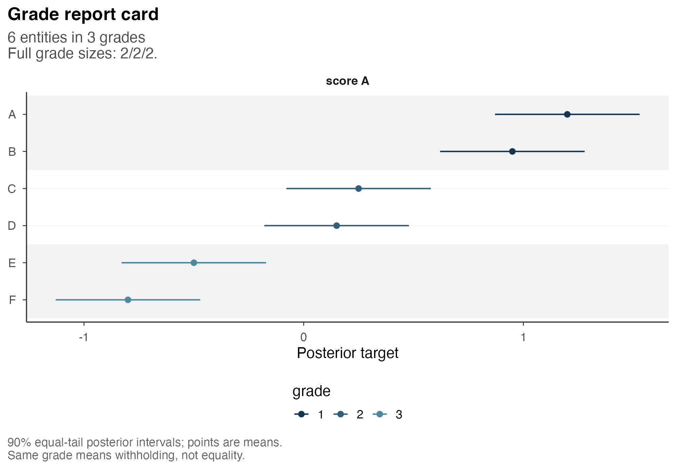
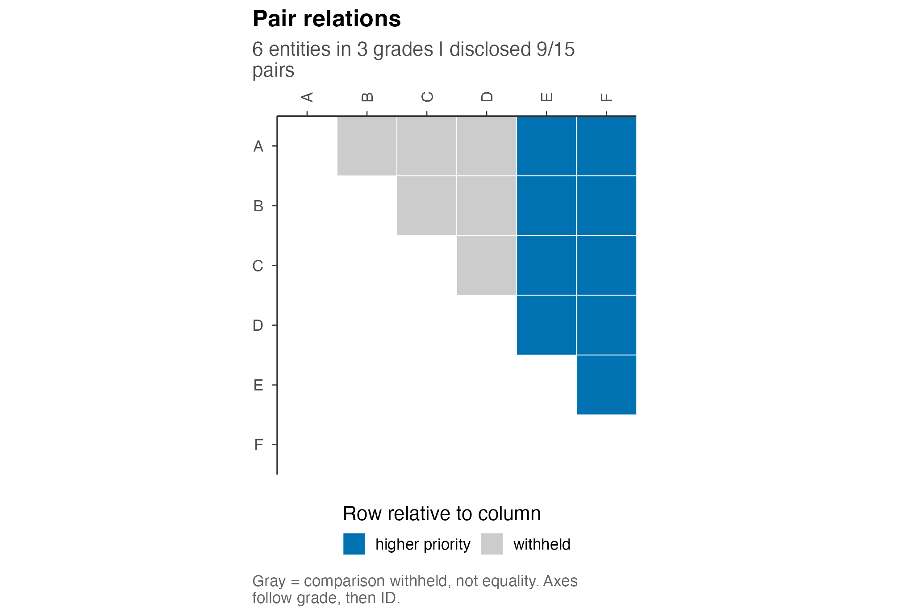
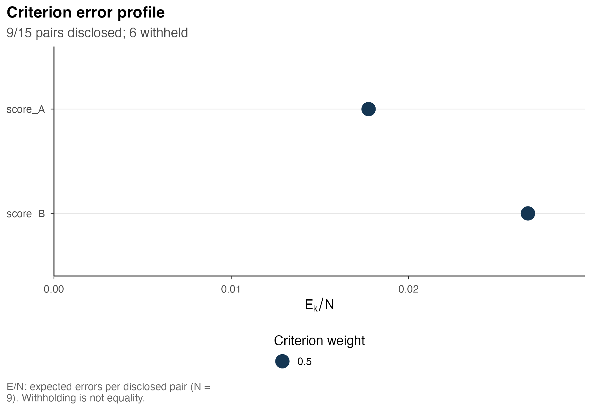
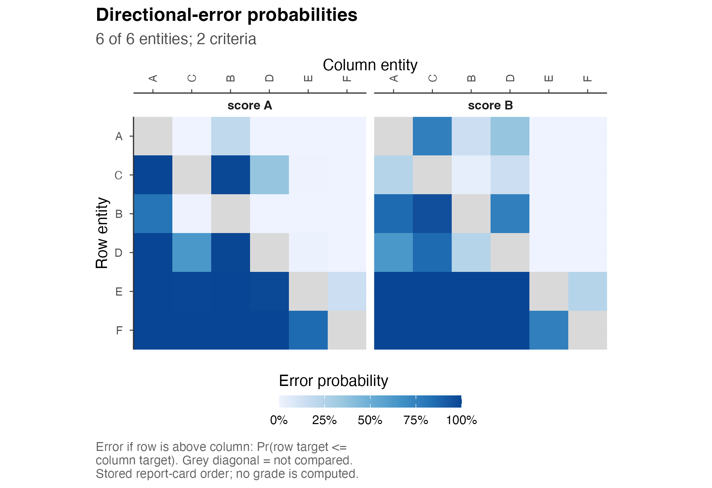
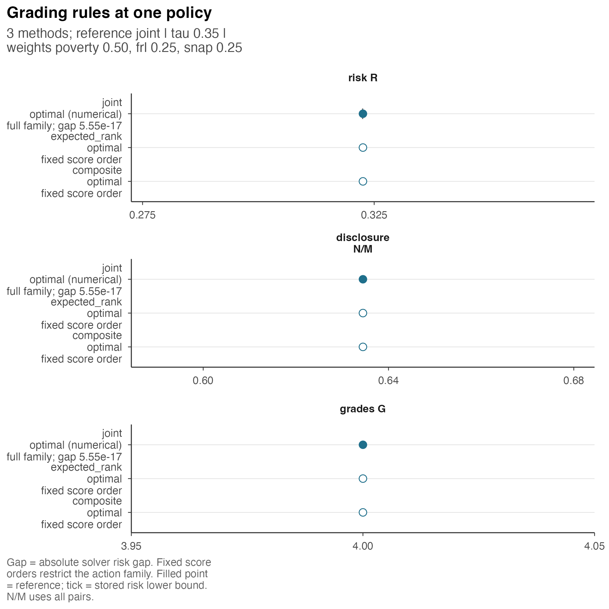
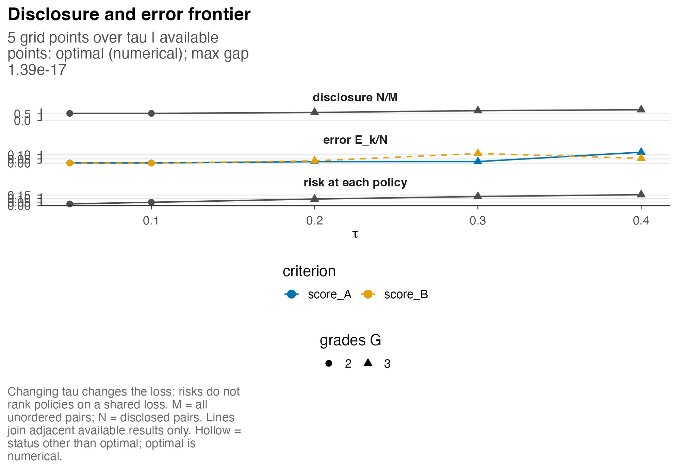
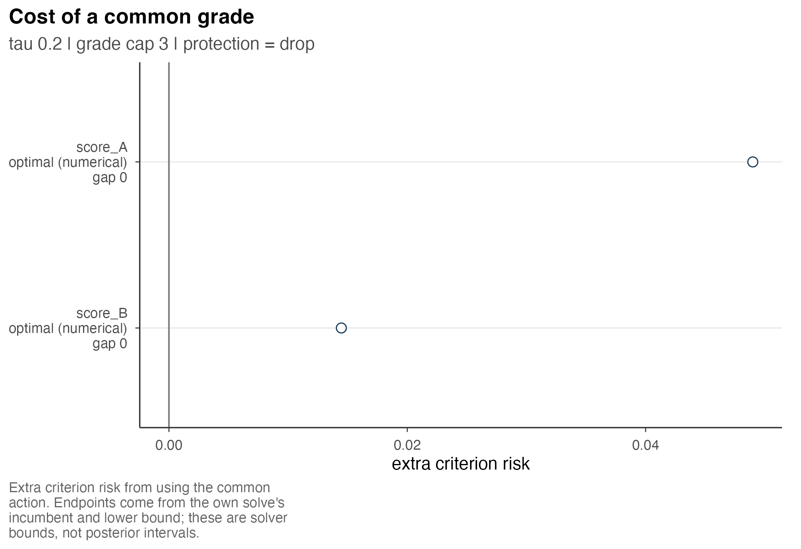

postrank provides seven ggplot2 plotting
functions for common-grade analyses. Every plotting function reads
stored postrank objects and returns a ggplot
object without running an optimization solver, fitting models, or
computing new comparison probabilities (for multidomain grade profiles
with a separate grade in each domain, see
postrank_plot_mdomain() in Grading entities across multiple
domains).
Below we load the stored six-site tutorial objects
(pr_tutorial, where independent normal scores have standard
deviation 0.2, larger values mean higher priority, Grade 1
is highest priority, and sharing a grade leaves a pair unordered without
claiming equal scores) alongside the stored 30-site baseline comparison
via postrank_example():
library(postrank)
one <- postrank_example("tutorial_one")
two <- postrank_example("tutorial_two")
frontier <- postrank_example("tutorial_frontier")
commonality <- postrank_example("tutorial_commonality")
comparison <- postrank_example("comparison_30x3_tau35")1. Report card (postrank_plot_report_card())
postrank_plot_report_card() plots each entity’s
posterior mean and equal-tail marginal interval colored by its assigned
integer grade (autoplot() on a
postrank_analysis or postrank_report_card
calls this plot by default):

Open full-size figurePosterior means, 90% equal-tail marginal intervals, and assigned grades on Score A across the six tutorial sites (Grade 1 has highest priority).
Each horizontal bar summarizes marginal uncertainty about one
entity’s target score rather than an uncertainty interval for its grade
assignment. With multiple criteria, separate panels keep each criterion
on its own units (ncol sets the panel layout). By default,
max_rows = 30L spreads a bounded display sample across
occupied grades and notes the selection in the subtitle; pass
entities to select specific IDs or display more rows,
entity_labels and criterion_labels to rename
axes without altering stored IDs, and order_by whenever
order = "mean" is used with more than one displayed
criterion.
2. Pair relations (postrank_plot_relations())
postrank_plot_relations() plots the pairwise ordering
decisions of one grading (autoplot() on a
postrank_fit or postrank_baseline calls this
plot by default; when a second grading y is supplied, it
plots the pairwise ordering changes from x to
y):

Open full-size figurePairwise ordering decisions of the two-criterion common grading across sites A through F: A through D share Grade 1 (left unordered), ahead of E (Grade 2) and F (Grade 3).
Cells display the grading decision (1 row ahead of
column, -1 column ahead of row, 0 shared
grade) rather than posterior comparison probabilities—an unordered cell
does not imply a 0.5 comparison probability. Only the
relative order of integer grade labels matters
(canonical_postrank_grade() preserves every cell). Use
labels = "none" to hide tick labels on large entity sets;
if a fit has no checked grading, the plot displays its solver status
instead.
3. Criterion error profile
(postrank_plot_profile())
postrank_plot_profile() plots per-criterion expected
wrong-direction errors per ordered pair (show = "E_over_N",
the default), per all unordered pairs (show = "E_over_M"),
or criterion loss (show = "risk", which includes
tau on unordered pairs):

Open full-size figureExpected wrong-direction errors per ordered pair (E/N) on Score A and Score B under the equal-weight two-criterion grading, with point size proportional to criterion weight.
Equal weights in the loss objective do not force equal error rates
across criteria. When a grading leaves all pairs unordered
(N = 0), E_over_N is NA (omitted
with a note) while E_over_M is 0. When
show = "E_over_N" and budgets = TRUE, vertical
tick marks indicate any declared per-criterion error budgets
q (show = "risk" instead draws a dashed
vertical line at tau), and zero-weight criteria with finite
values appear as small hollow circles.
4. Pairwise error probabilities
(postrank_plot_pairwise())
postrank_plot_pairwise() displays the input
directional-error probabilities e[i, j, k]—the posterior
probability
that placing row entity i ahead of column entity
j on criterion k is wrong:
postrank_plot_pairwise(two, ncol = 2L)
Open full-size figureInput directional-error probabilities Pr(theta_i <= theta_j) on Score A and Score B across the six tutorial sites; gray diagonal cells mark self-comparisons (NA).
Self-comparisons on the diagonal are NA (drawn in gray)
rather than zero-error pairs. By default,
max_entities = 20L bounds the matrix size
(max_entities = NULL draws all entities).
postrank_plot_pairwise() accepts
postrank_analysis, postrank_fit,
postrank_pairwise (including
postrank_probabilities), or
postrank_coefficients objects; call
postrank_pairwise() first when starting from raw
postrank_draws (tie-aware postrank_tie_*
objects have separate three-way probabilities and are not plotted
here).
5. Method comparison (postrank_plot_compare())
postrank_plot_compare() compares a reference grading and
alternative rules evaluated on the exact same posterior and loss
(autoplot() on a postrank_comparison). Here
comparison_30x3_tau35 evaluates the four-grade common
grading alongside expected-rank and composite fixed-order cut baselines
across 30 synthetic sites on poverty, frl, and
snap (weights = c(0.5, 0.25, 0.25),
tau = 0.35, G_max = 4):
postrank_plot_compare(comparison, ncol = 1L)
Open full-size figureLoss, disclosure rate, and occupied grade count for the joint common grading and two fixed-order cut baselines evaluated under the same 30-site posterior and loss (ncol = 1).
Axis labels summarize each rule’s solver status, optimality scope
(whole allowed family vs. contiguous cuts of one fixed score order), and
optimization gap, and flag any candidate that falls outside
G_max, exact_G, or q. Setting
view = "relations" plots stacked counts of newly ordered,
newly unordered, and reversed pairs relative to the reference
grading.
6. Withholding-cost frontier
(postrank_plot_frontier())
postrank_plot_frontier() plots the fraction of ordered
pairs ("disclosure"), per-criterion expected errors per
ordered pair ("error"), and overall loss
("risk") across a grid of tau or
q settings (autoplot() on a
postrank_frontier):
postrank_plot_frontier(frontier)
Open full-size figureDisclosure rate, criterion expected errors per ordered pair, and overall loss across tau = 0.05, 0.10, 0.20, 0.30, and 0.40 on the six-site two-criterion tutorial posterior.
Under exact optimization over a fixed allowed family, the number of
ordered pairs never falls as tau increases, whereas
numerical runs should be read alongside their solver statuses and gaps
(mark_uncertified = TRUE draws points whose solver status
is not "optimal" as hollow circles; "optimal"
records numerical solver termination within tolerances and is not an
exact mathematical certificate). Missing or unvalidated grid points
appear as breaks along the path, and losses at different
tau values come from different loss functions.
7. Commonality cost (postrank_plot_commonality())
postrank_plot_commonality() plots how much extra
posterior expected loss each criterion incurs under a shared common
grading compared with a separate grading optimized for that criterion
alone at the same tau and G_max
(autoplot() on a
postrank_commonality_cost):
postrank_plot_commonality(commonality)
Open full-size figureExtra criterion loss under the shared two-criterion grading relative to each criterion’s own optimized grading on the six tutorial sites, with solver bound intervals [cost_lower, cost_upper].
Each horizontal segment [cost_lower, cost_upper]
reflects numerical solver bounds for that criterion’s own optimization
problem (cost_lower subtracts the criterion’s best checked
loss; cost_upper subtracts its solver lower bound), not
posterior uncertainty about the target scores. When the common problem
includes error budgets q, report whether
protection dropped or kept q in the
single-criterion solves.
8. Underlying plot data and saving figures
postrank_plot_data() returns the full data frame (or
list of data frames) behind any of the seven plot types without applying
max_rows, max_entities, or display label
maps:
postrank_plot_data(two, "profile")[, c("criterion", "weight", "E", "E_over_N", "risk")]
#> criterion weight E E_over_N risk
#> 1 score_A 0.5 0.1596996 0.01774440 0.09064664
#> 2 score_B 0.5 0.2405960 0.02673289 0.09603973Save any returned ggplot object at explicit dimensions
with ggplot2::ggsave() (using optional svglite
for SVG output). For sensitivity analyses and export recipes, see Figures and sensitivity to reporting
settings and Reading and
exporting grading results.